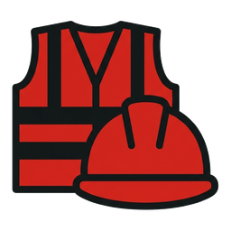
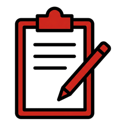
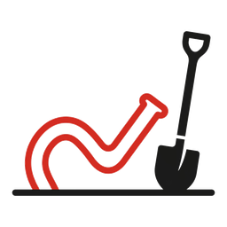
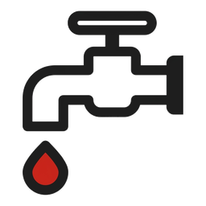
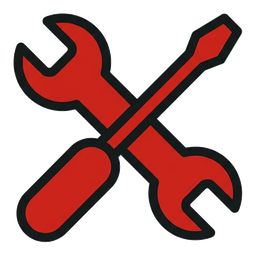
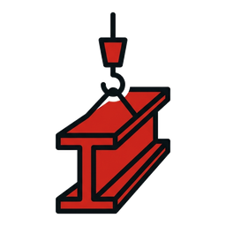
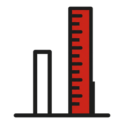
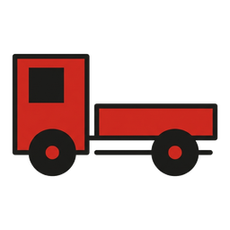
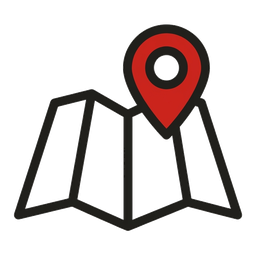

NALPSOLAR · LOS B8-13

Sicherheit Notruf · Rettung · Konzepte · DE EN IT PL
Neu Tagesrapport Den Tag erfassen und abschicken
Neu Altlasten 55 Fremdkörper auf der Karte – entfernen, abhaken, Foto
Wasserleitung PZ4 44 Tische zuerst bohren – Karte und Liste
Vormontage Etikett fotografieren, Lager, Karte, Einführung
Stahlbau Schrauben & Drehmomente, Pläne, 3D-Modell je Typ
Neu Schrägpfahl Lage längs daneben? Wie weit ziehen – mit Skizze Einkauf Fehlt etwas? Mit Foto melden – Stand in der Liste
Transporte Fuhre bei Schuoler bestellen – was, wohin, bis wann
Pläne 2D & 3D Karte mit Tischen und ID-Suche, 3D-Gelände Spiele Birkhuhn-Jagd & Creeper-Nacht